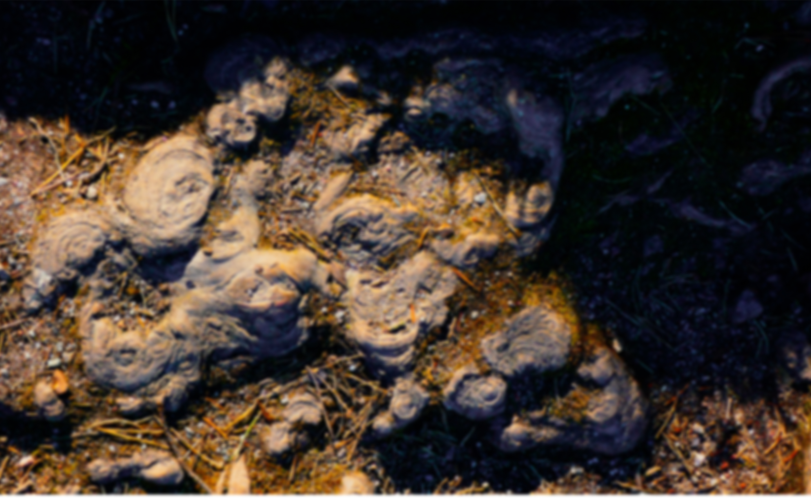
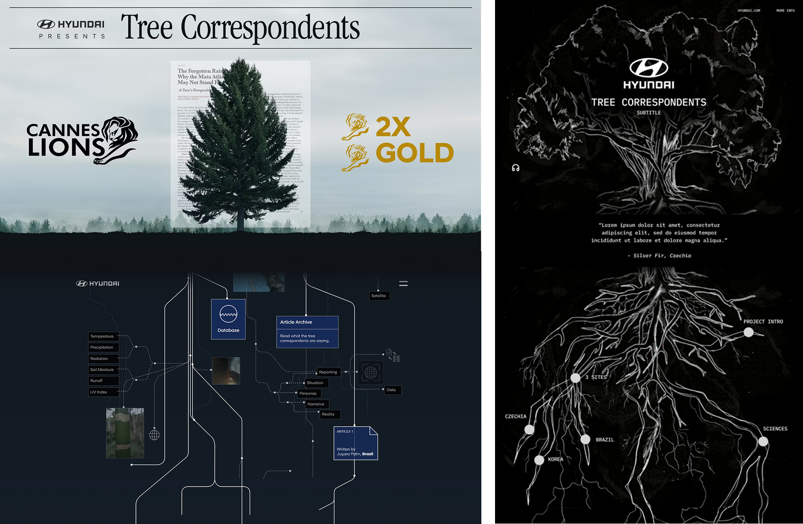
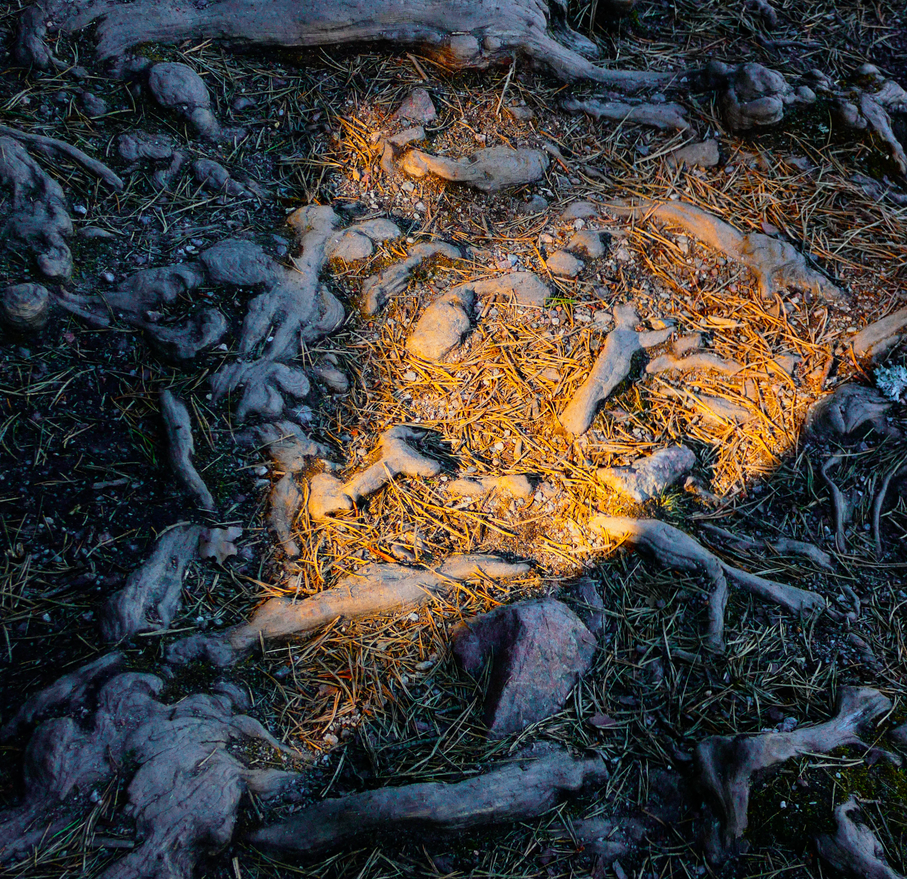
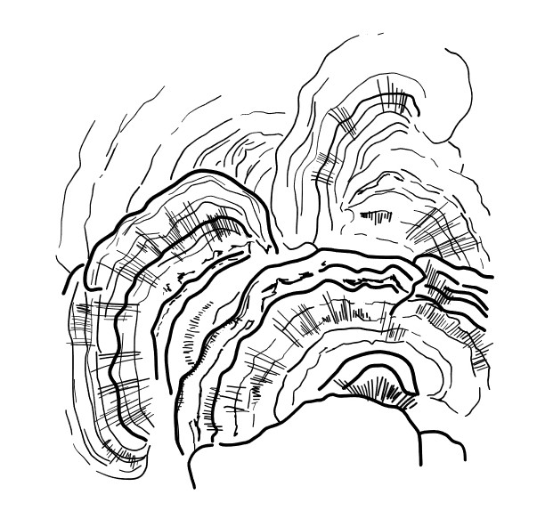
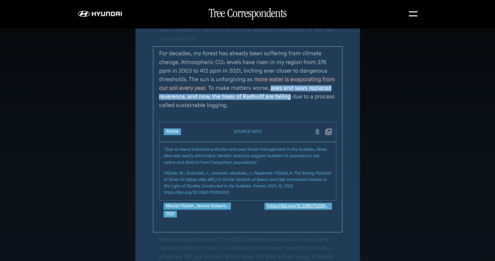
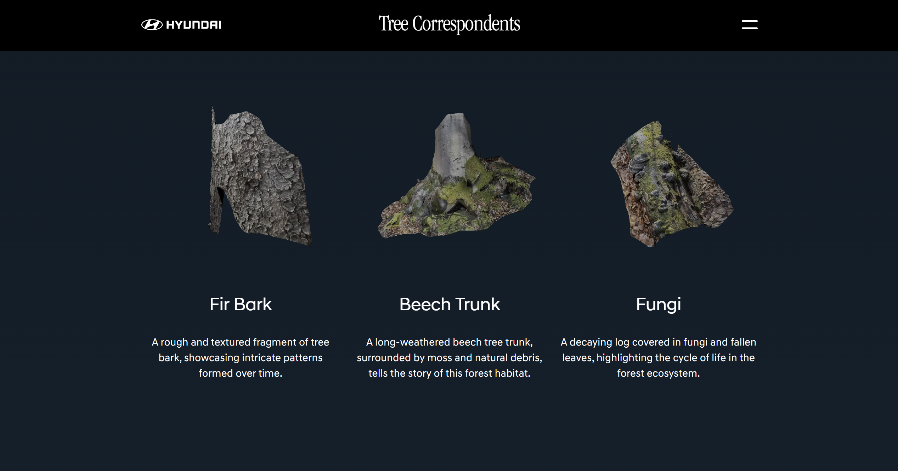
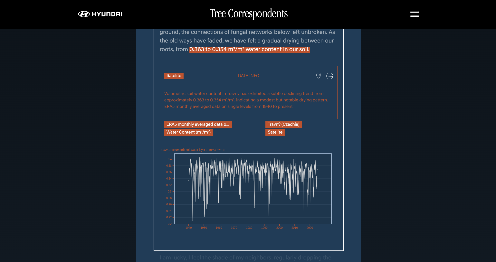
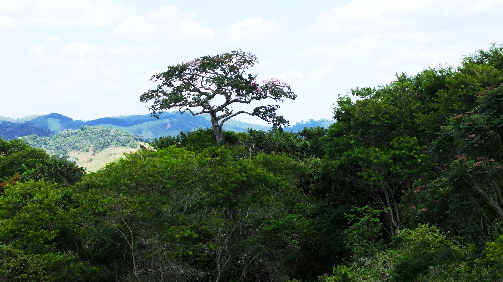

Au cours de la dernière décennie, Hyundai a planté 1 million d’arbres dans 13 pays dans le cadre du projet IONIQ Forest. En 2025, à l’occasion de son 10e anniversaire, Hyundai donne la parole à ces arbres en utilisant des données et l’IA. « Tree Correspondents » est une campagne marketing RSE. Hyundai a remporté deux Lions d’or et un Lion d’argent pour la narration de données et la prouesse technologique dans le domaine du numérique.

Uncharted Limbo Collective, une agence de codeurs créatifs, était en charge de ce projet. Ils m’ont demandé de développer le graphisme et la mise en page du site web.

La cartographie, sous forme de racines d’arbre, vient relier les architectures existantes et les corréler entre elles, révèlant l’interdépendance et les connexions de la matière. Cette interface est une médiation entre les arbres et les lecteurs, via le numérique. La connexion passe par la rédaction d’articles « par les arbres », via l’IA, à partir des données scientifiques : température, pression, précipitations, vitesse du vent…




